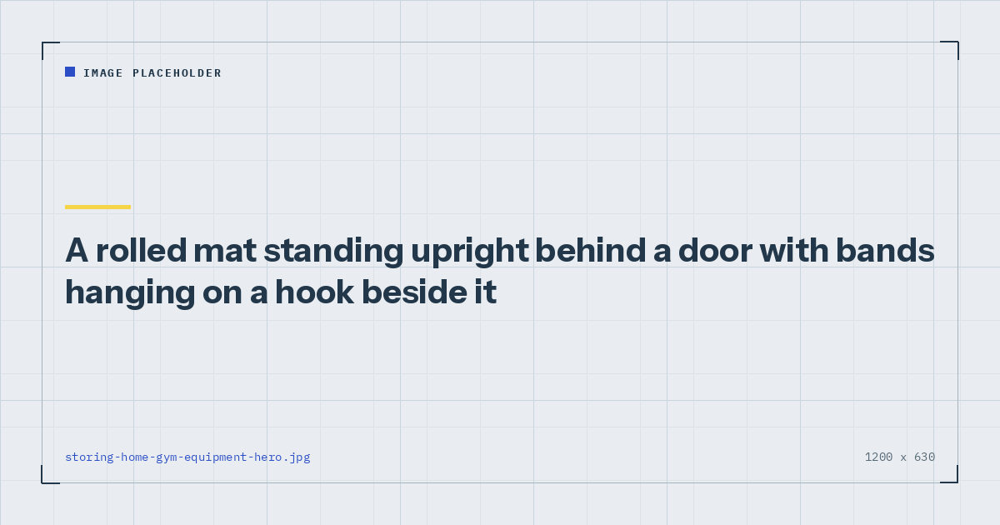

Small-Space Training
How to Store Home Gym Equipment in a Tiny Flat
Storage that hides your equipment perfectly is storage that stops you training. The goal is not tidiness — it is keeping the gap between deciding and starting under about fifteen seconds.

Every article about home gym storage optimises for the room looking tidy. That is a reasonable goal for a room and a poor one for a training habit, because the two pull in opposite directions.
Equipment stored perfectly is equipment that requires retrieving. Retrieving is a step, steps are friction, and friction is where sessions get lost — the mechanism is set out in how to actually stick to a home workout habit.
The principle
Aim for fifteen seconds from deciding to train to starting the warm-up. That is the design constraint, and it rules out a surprising amount of otherwise sensible storage.
It rules out: anything in a loft, anything behind other things, anything requiring a chair to reach, and anything in a different room from where you train. It permits: anything on a hook, anything standing in a corner, anything in one open box, anything under a bed with clearance.
Tidiness is a real constraint too, particularly in a shared flat. The point is to treat it as a constraint rather than the objective.
Nine places that work
1. Behind a door. The most under-used space in any flat. A rolled mat stands there permanently and disappears when the door is open. Bands hang on the door's own hook.
2. Under the bed. Good for flat items — a folded mat, puzzle tiles, a weighted vest. Check clearance first; divan bases often have less than you think.
3. On the back of a door. An over-door hook rack holds bands, a suspension trainer and a skipping rope in almost no space.
4. Vertically in a corner. A rolled mat standing on its end takes up about 15cm square of floor. This is the single best mat storage in a small flat.
5. Inside an ottoman or storage footstool. Genuinely useful, because it is furniture that already exists and opens in one movement.
6. On the wall. Two hooks hold bands, a rope and a towel. Costs nothing and reads as intentional rather than as clutter.
7. In a single open box in the corner of the training area. One box, not several, and open rather than lidded. A lid is a step.
8. The doorway bar, left in place. If the doorway is one you can spare, leaving the bar up removes a fitting step each session. If small children can reach it, take it down — see the doorway pull-up bar guide.
9. Nowhere. The mat stays down. If your training spot allows this, it is the best option available and worth arranging the room around.
Storage by item
| Item | Best storage | Footprint |
|---|---|---|
| Exercise mat | Rolled, standing in a corner or behind a door | ~15 × 15 cm |
| Puzzle tiles | Stacked flat under a bed or sofa | Flat |
| Resistance bands | Hook on a wall or door back | None |
| Doorway pull-up bar | Left in the frame, or behind a door | None to ~10 cm |
| Adjustable dumbbell | On the floor at the base of a wall | ~30 × 20 cm |
| Suspension trainer | Hook, or in a drawer | Minimal |
| Furniture sliders | Anywhere; they are the size of a coaster | Negligible |
| Weighted vest | Hook, or under the bed | Minimal on a hook |
| Ab wheel | Under a sofa | Flat |
Note how little of this needs real space. The equipment list that covers nearly all home training — mat, bands, bar, one weight — occupies less than a large suitcase in total. The buying order is in the minimalist home gym guide.
If retrieving your equipment takes longer than your warm-up, the storage is the problem.
Storage mistakes that cost you sessions
Storing in a different room. The commonest and the worst. A trip to another room is a decision point, and decision points at seven in the morning do not go your way.
Lidded boxes. A lid seems trivial and is one more action. Open crates or baskets work better.
Stacking things on top of the mat. Now retrieving the mat requires moving three items. Whatever is stored with the mat must be beside it, never on it.
Loft or high shelf storage. Equipment stored above head height is equipment you have stopped owning.
Buying storage before establishing where you train. Train for two months first, then arrange storage around the spot that turned out to work.
If you share the space
Living with a partner or housemates makes visible equipment a negotiation rather than a preference.
Two things that help. First, keep the visible footprint genuinely small — a rolled mat and two hooks read very differently from a scatter of kit. Second, choose the equipment that disappears: bands over anything rigid, a doorway bar that comes down in five seconds over anything freestanding.
Where a compromise is unavoidable, take the storage compromise rather than the training compromise. A mat kept behind a door is fine; a mat in a cupboard in another room is the start of not training.
Buying with storage in mind
Storage should influence what you buy, not just where you put it. Three implications.
Prefer bands over anything rigid. They cover the pulling pattern, which is the one genuine gap in bodyweight training, and they store on a hook — see the resistance bands guide.
Prefer puzzle tiles over a single large mat if you need to cover a wide area, since they stack flat and you can buy the area you need.
Buy nothing until you have trained for two months. Adult activity guidance asks for muscle-strengthening work on two or more days a week,1 and none of it requires equipment you have to store. Find out what you actually miss before solving a storage problem you may not have.
Where to go next
For arranging the training space itself, see setting up a home gym corner. For the smallest possible setup, see training in a studio flat.
Frequently asked questions
Where can I store gym equipment in a small flat?
Behind a door, standing vertically in a corner, under the bed, on wall hooks, inside an ottoman, or in a single open box beside where you train. A rolled mat standing on its end takes about fifteen centimetres square of floor.
How do I store an exercise mat in a small space?
Rolled and standing upright in a corner or behind a door. Never in a cupboard in another room — retrieving it becomes a decision point, and decision points early in the morning rarely go your way.
How much space does home gym equipment actually need?
Very little. A mat, resistance bands, a doorway pull-up bar and one adjustable weight together occupy less than a large suitcase, and most of it stores on hooks or flat under furniture.
Should I take my pull-up bar down between sessions?
Only if the doorway is one you need, or if small children can reach it. Leaving it in place removes a fitting step from each session, which matters more than it sounds.
What is the biggest home gym storage mistake?
Storing equipment in a different room from where you train. A trip to another room is a decision point, and it costs more sessions than any amount of untidiness.
Sources and further reading
- World Health Organization. WHO Guidelines on Physical Activity and Sedentary Behaviour. 2020.
- NHS. Strength and Flex exercise plan.
- NHS. Physical activity guidelines for adults aged 19 to 64.
- MedlinePlus, U.S. National Library of Medicine. Exercise and Physical Fitness.
Comments
Comments are not enabled yet. Add a hosted comment embed (Disqus, Commento, Giscus) inside this container when you are ready.